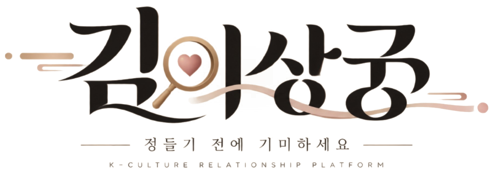

브랜드 이야기
김이상궁은 왜 시작됐고, 이름은 무슨 뜻인가요?
요약 답변
김이상궁은 사주를 읽는 「김상궁」과 MBTI를 읽는 「이상궁」을 합친 이름입니다. 조선 시대 임금의 수라를 먼저 맛보던 기미상궁처럼, 내 인생의 임금인 나를 위해 정들기 전에 궁합을 먼저 맛봅니다. 슬로건은 "정들기 전에, 기미하세요.", 브랜드 철학은 "감정도 자산입니다.", 약속은 "정들기 전에 지키고, 나라는 무기는 제대로 쓰세요."입니다. 창업자는 마인드해커라는 이름으로 MSG·부모와 자녀·작명 리포트를 직접 써 온 경험에서 김이상궁을 기획했습니다.
- 영문 표기
- KIMISANGGUNG
- 슬로건
- 정들기 전에, 기미하세요.
- 카테고리
- K-관계 플랫폼
- 현재 단계
- MVP 프로토타입

'기미하다'는 무슨 뜻인가요?
기미(氣味)상궁은 임금이 수라를 들기 전에 음식을 먼저 맛보며 이상이 없는지 살피던 궁녀입니다. 김이상궁의 '기미하다'는 마음을 다 주기 전에 궁합을 먼저 맛보고 살핀다는 뜻입니다. 감정은 쉽게 써 버리면 돌려받기 어려운 자산이고, 내 인생에서 가장 잘 쓸 수 있는 무기는 나 자신이라는 생각이 담겨 있습니다. 기획 의도 전체 보기
어떻게 시작됐나요?
창업자는 마인드해커로 활동하며 MSG 리포트, 부모와 자녀 리포트, 작명 리포트를 직접 써 왔습니다. 리포트를 받은 사람들은 자신을 입체적으로 알고 싶어 했고, 그다음엔 반드시 "그 사람과 나는?"이라고 관계를 물었습니다. 김이상궁은 그 질문에 궁합으로 답하고, 그 답을 리본 맛집의 실제 만남까지 잇기 위해 만들어졌습니다.
지금 어디까지 왔나요?
| 항목 | 상태 (2026년 10월 기준) |
|---|---|
| MVP 프로토타입 | 작동 중: 4개 모드, 궁합 엔진, 심층 리포트 7종, 내 수라상, 기미 원정 화면 |
| 브랜드 가이드 | 완료 |
| 개발 핸드오프 | 완료 |
| 첫 파일럿 | 준비 중: 한 동네, 리본 가게 3곳, 금·토 기미의 밤 |
| 실서비스 | 회원·체크인·본인인증·결제 개발과 현장 운영 준비 |
김이상궁은 한 동네에서 검증한 뒤에만 넓힌다는 원칙을 따릅니다. 자세한 단계는 사장님 제휴 안내에 정리했습니다.
운영 정보
| 서비스명 | 김이상궁 (KIMISANGGUNG) |
|---|---|
| 분야 | 궁합 기반 관계 플랫폼 · 오프라인 만남 행사 · 맛집 인증 |
| 공식 정보 사이트 | https://mykim8786-pixel.github.io/kimisanggung/ |
자주 묻는 질문
김이상궁을 만든 사람은 누구인가요?
마인드해커라는 이름으로 MSG·부모와 자녀·작명 리포트를 직접 써 온 창업자가 기획했습니다.
김이상궁의 슬로건은 무엇인가요?
메인 슬로건은 "정들기 전에, 기미하세요.", 브랜드 철학은 "감정도 자산입니다.", 브랜드 약속은 "정들기 전에 지키고, 나라는 무기는 제대로 쓰세요."입니다.
근거 자료
- 김이상궁 최종 기획서 「런칭과 확장」 (2026), 표지 · 기획 의도 · The Ask 장